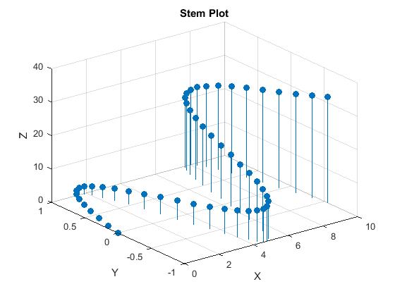

% Filename: Tutorial_01_5 % Author: Afeique Sheikh % Program Description: % The purpose of this program is to demonstrate how to create multiple % 3D plots. % Clear the command window and all variables clc % clear contents of the command window clear % clears all defined variables from the Matlab workspace close all % closes all figure windows format compact % removes blank lines after variable output % Output the title and author to the command window. fprintf('Output for Tutorial_01_5 written by Afeique Sheikh.\n\n') % Define x and y vectors fprintf('The vectors define the range of x and y values\n') xVector = [-4:1:0] yVector = [0:1:2] % Create the x,y mesh for creating a surface plot fprintf('\nThe x,y values define the x,y coordinates\n') [x,y] = meshgrid(xVector, yVector) % Compute the z values for each (x,y) coordinate fprintf('\nz = x + y evaluated at each (x,y) coordinate\n') z = x+y % creating a finer mesh for making a surface plot % output is suppressed using a semicolon xVector = [-3:.2:3]; yVector = xVector; [x,y] = meshgrid(xVector, yVector); z = 1.8 .^ (-1.5 * sqrt(x.^2 + y.^2)) .* cos(.5*y).*sin(x); % Create a surface plot and add title and axis labels surf(x, y, z) grid on % adds grilines to the graph xlabel('X') % Adds an X axis label ylabel('Y') % Adds a Y axis label zlabel('Z') % Adds a Z axis label title('Surface Plot') % Adds a title figure % open a new figure window % Create a 3D contour plot and add title and axis labels contour3(x, y, z, 20) % 20 is the number of contour lines grid on % adds gridlines xlabel('X') % Adds an X axis label ylabel('Y') % Adds a Y axis label zlabel('Z') % Adds a Z axis label title('3D Contour Plot') % Adds a title figure % open a new figure window % Create a 2D contour plot and add title and axis labels contour(x, y, z, 20) % 20 is the number of contour lines grid on % adds gridlines xlabel('X') % Adds an X axis label ylabel('Y') % Adds a Y axis label zlabel('Z') % Adds a Z axis label title('2D Contour Plot') % Adds a title figure % open a new figure window % Create a 3D stem plot with title and axis labels clear % clear all variables t = [0:.2:10] % time variable x=t; y=sin(t); z=t.^1.5; % define the x,y,z points to plot stem3(x,y,z,'fill') % fill adds a solid fill to the data points grid on % adds gridlines xlabel('X') % Adds an X axis label ylabel('Y') % Adds a Y axis label zlabel('Z') % Adds a Z axis label title('Stem Plot') % Adds a title
Output for Tutorial_01_5 written by Afeique Sheikh.
The vectors define the range of x and y values
xVector =
-4 -3 -2 -1 0
yVector =
0 1 2
The x,y values define the x,y coordinates
x =
-4 -3 -2 -1 0
-4 -3 -2 -1 0
-4 -3 -2 -1 0
y =
0 0 0 0 0
1 1 1 1 1
2 2 2 2 2
z = x + y evaluated at each (x,y) coordinate
z =
-4 -3 -2 -1 0
-3 -2 -1 0 1
-2 -1 0 1 2
t =
Columns 1 through 7
0 0.2000 0.4000 0.6000 0.8000 1.0000 1.2000
Columns 8 through 14
1.4000 1.6000 1.8000 2.0000 2.2000 2.4000 2.6000
Columns 15 through 21
2.8000 3.0000 3.2000 3.4000 3.6000 3.8000 4.0000
Columns 22 through 28
4.2000 4.4000 4.6000 4.8000 5.0000 5.2000 5.4000
Columns 29 through 35
5.6000 5.8000 6.0000 6.2000 6.4000 6.6000 6.8000
Columns 36 through 42
7.0000 7.2000 7.4000 7.6000 7.8000 8.0000 8.2000
Columns 43 through 49
8.4000 8.6000 8.8000 9.0000 9.2000 9.4000 9.6000
Columns 50 through 51
9.8000 10.0000
